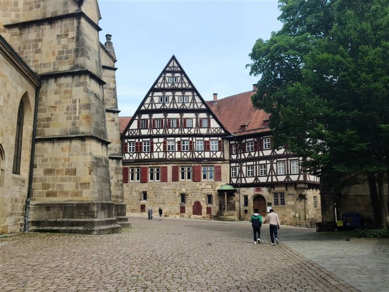
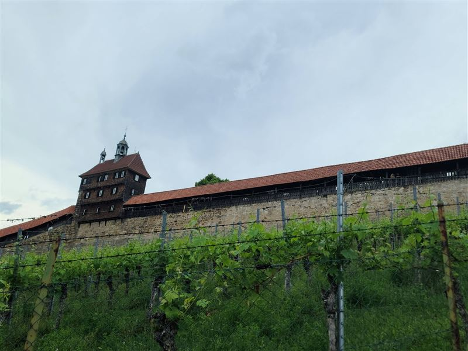
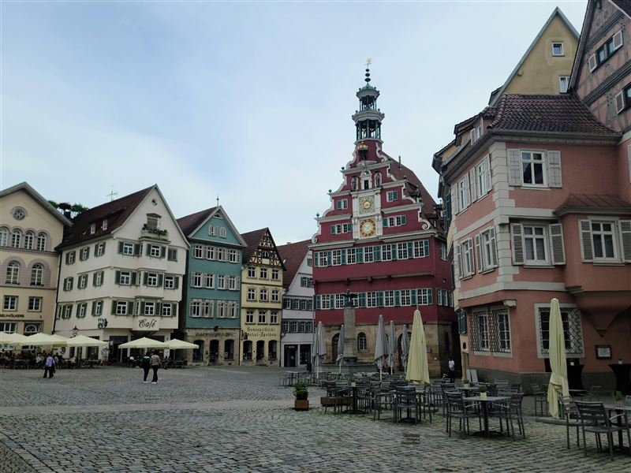
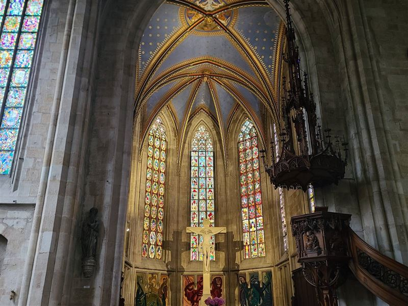
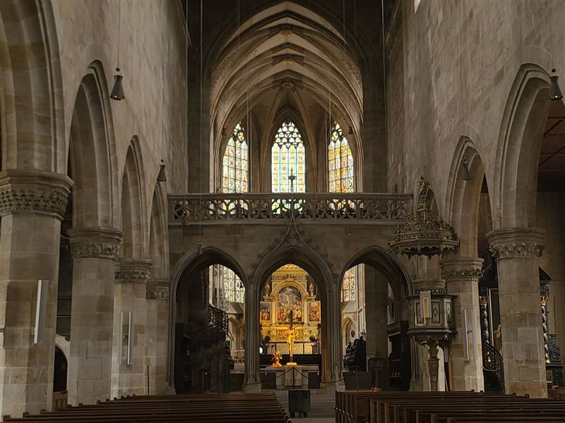
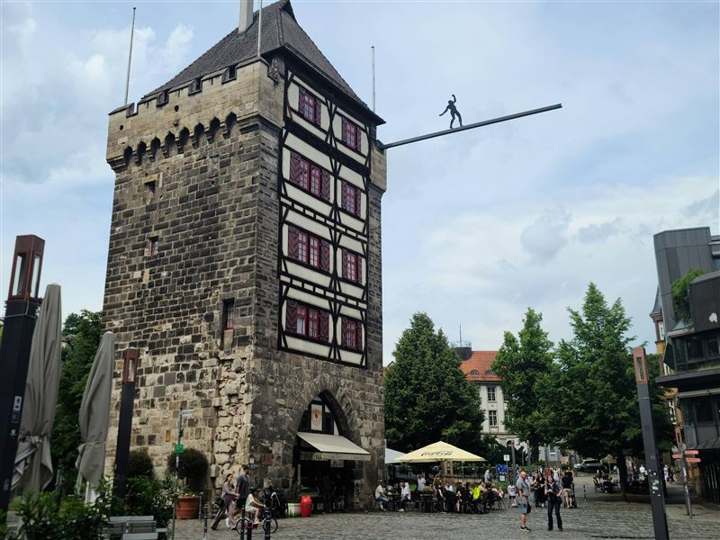
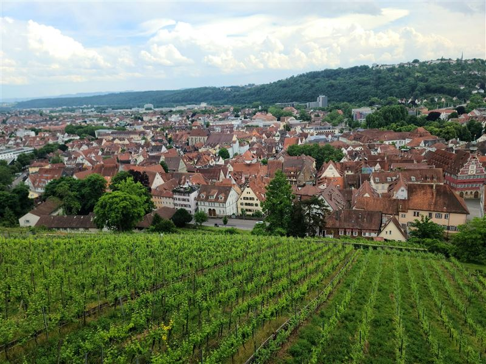
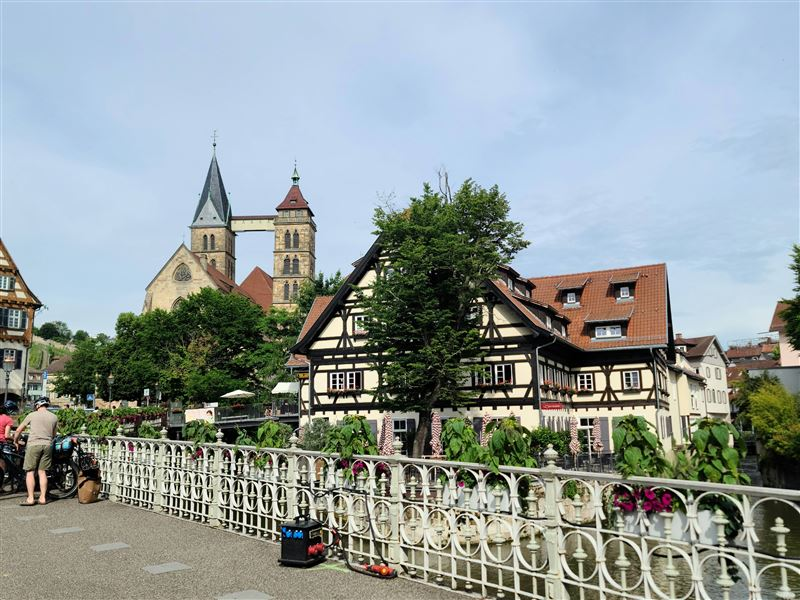

Explore Esslingen
A Brief History
Esslingen am Neckar is a highly historic Swabian city that flourished as a Free Imperial City in the Middle Ages. Having miraculously escaped major damage during World War II, it boasts one of Germany's oldest and most spectacularly preserved arrays of authentic half-timbered medieval houses, continuing its long legacy of viticulture and precision engineering.
Attractions Map
Top Sights & Activities

Esslingen Historic Oldtown
This medieval center survived the bombings of World War II, preserving an array of authentic half-timbered houses, ancient churches, and civic buildings from the 13th to 16th centuries. It preserves the historical layout and architectural heritage of a prosperous medieval Swabian trading city.

Esslingen Castle (Esslingen Burg)
Constructed over centuries starting around 1300, this fortress was an integral part of the defensive wall system protecting the Free Imperial City. Its massive towers and thick walls provided strategic oversight of the Neckar Valley, with the well-preserved ruins offering panoramic views today.

Altes Rathaus (Old Town Hall)
Built in the 1420s, this civic building features an elaborate Renaissance facade added in 1589 and a historically significant astronomical clock. It historically housed the city council and courts, remaining a symbol of historic civic wealth and independence.

Frauenkirche
Constructed over nearly 200 years beginning in 1321, this Gothic church features an intricate openwork spire. Funded by affluent citizens rather than the nobility, it stands as a testament to historic wealth and independence, renowned for its medieval stained glass windows.

Stadtkirche St. Dionys
Dating primarily from the 13th century, this Gothic church is distinguished by twin towers connected by a wooden bridge built for stabilization. As the historical center of religious life built over earlier Romanesque foundations, it offers insights into the region's architectural evolution.

Schelztorturm
Built around 1220, this defensive tower was an important gate within the extensive medieval city walls. It features a half-timbered structure built on a solid stone base, recently updated with a contemporary sculpture that highlights the juxtaposition of medieval fortification and modern art.

Weinerlebnisweg Burgsteige
This scenic pathway follows historic routes through steep, terraced vineyards that have defined the local landscape for over a millennium. Viticulture has been a crucial economic driver since the Middle Ages, with the trail connecting the modern city to its enduring agricultural heritage.

Sankt-Agnes-Brucke
Constructed in 1893, this stone bridge crosses the river canals, facilitating crucial transport within the expanding industrial city. Replacing older crossings, it represents late 19th-century civil engineering improvements and provides views over the historical water networks.